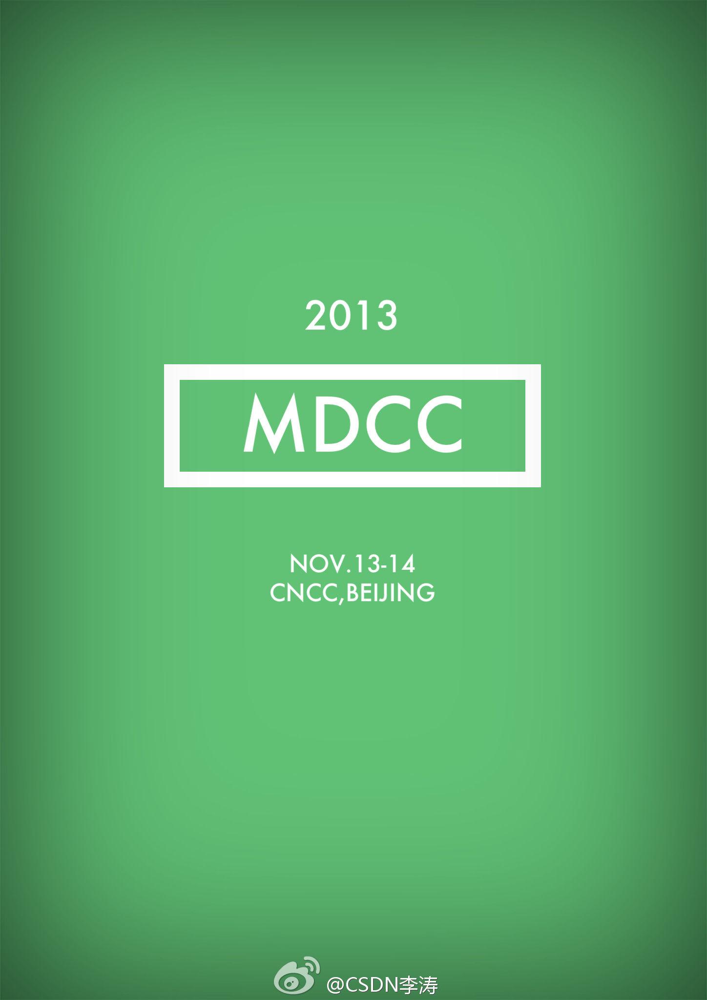
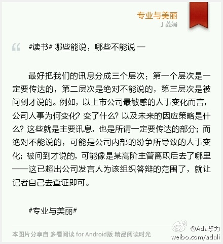

这么小众的话题，会场也坐满了。老同事@沈卓立TouchChina 也过来了。@CTO俱乐部:CTO俱乐部第103期地图导航专场活动，邀请到高德 产品技术副总裁冯汉平与北京四维图新科技股份有限公司 副总经理曹晓航给大家分享他们在地图导航领域的成长发展经验。本次活动与7月18号14:00现场直播，没到场的可以在线观看哦~网页链接
这次是你第一个微博上发2013年移动开发者大会的时间和地点。@李涛TonyLi:很多朋友问，今年的移动开发者大会（MDCC）什么时候召开？ 定了，定了，国家会议中心，11月13-14日，1314哦！ 
曹远航提到地图数据的“众包”思路，“众包”是社区运营中的一种方法，听着太亲切了。//@沈卓立TouchChina: 地图现在是大众应用，哈哈。 //@Ada李力:这么小众的话题，会场也坐满了。老同事@沈卓立TouchChina 也过来了。@CTO俱乐部:CTO俱乐部第103期地图导航专场活动，邀请到高德 产品技术副总裁冯汉平与北京四维图新科技股份有限公司 副总经理曹晓航给大家分享他们在地图导航领域的成长发展经验。本次活动与7月18号14:00现场直播，没到场的可以在线观看哦~网页链接
#读书# 哪些能说，哪些不能说 — 最好把我们的讯息分成三个层次：第一个层次是一定要传达的，第二层次是绝对不能说的，第三层次是被问到才说的。例如，以上市公司最敏感的人事变化而言，公司人事为何变化？变了什么？以及未来的因应策略是什么？这些就是主要讯息，也是所谓一定要传达... 